HOME/CARDS
30 CARDS ／ 5 COLORS
都市も、災害も、政策カードも、すべて現実にある出来事や制度がもとになっている。色ごとに切り替えて、1枚ずつ確かめられる。
守る対象。すべて実在の都市で、それぞれが災害史を背負っている。
青 ＝ 情報・操作対象
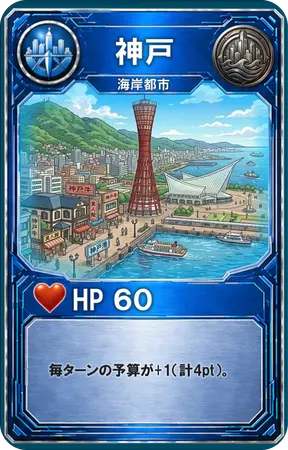
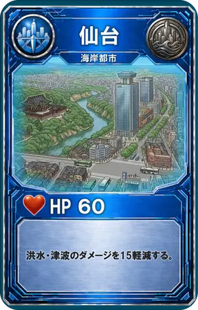
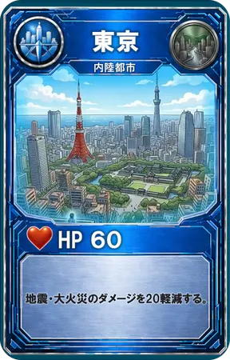
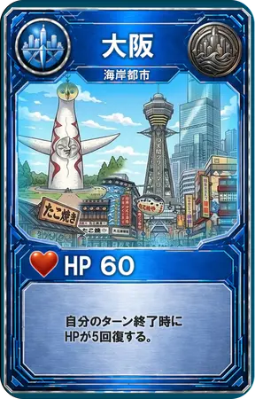
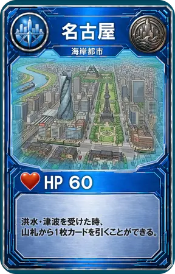
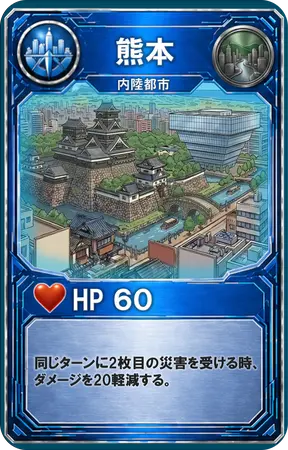
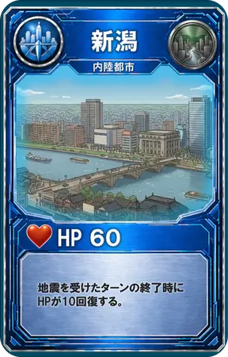
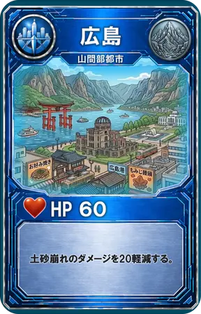
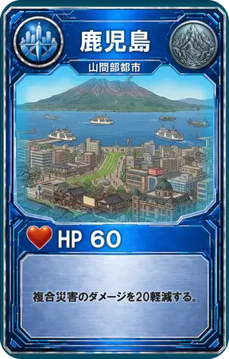
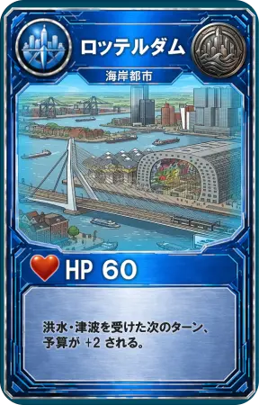
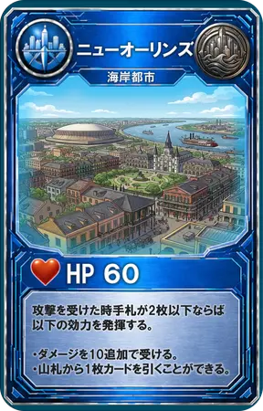
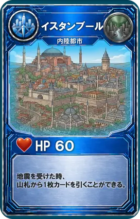
いつ来るか誰にも分からない。順番も規模も選べない。
赤 ＝ 危険・被害
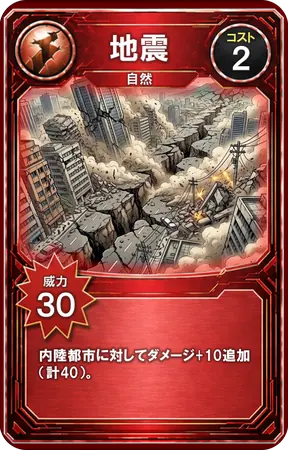
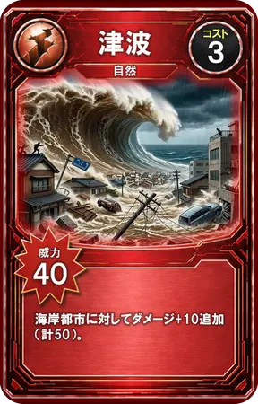
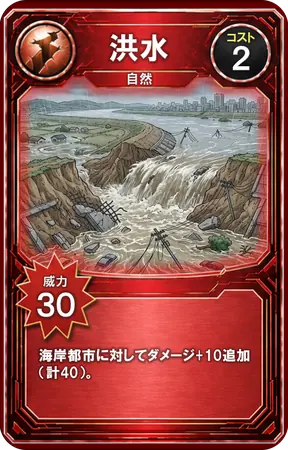
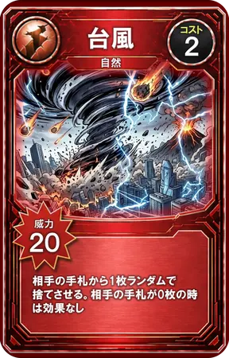
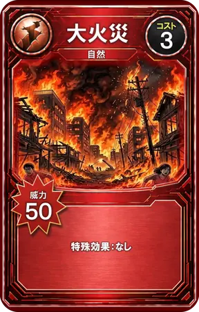
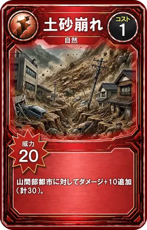
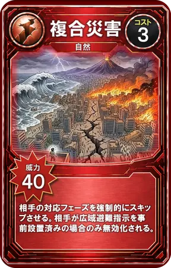
脅威は自然だけではない。人がつくる災害もある。
紫 ＝ 特殊・無効化
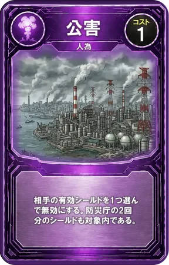
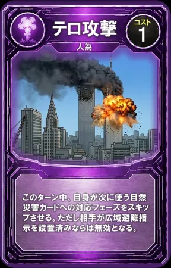
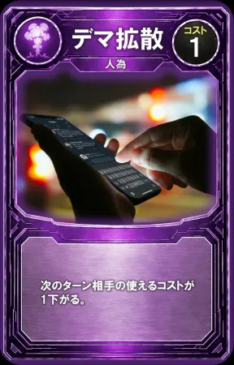
事前に置いて備える。起きてからでは、もう遅い。
緑 ＝ 安全・防御
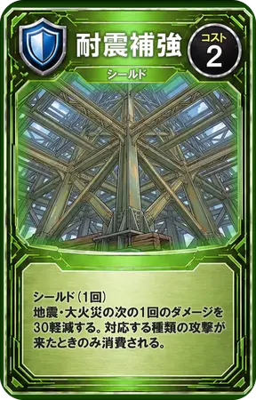
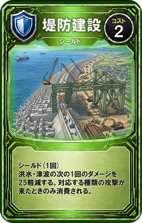
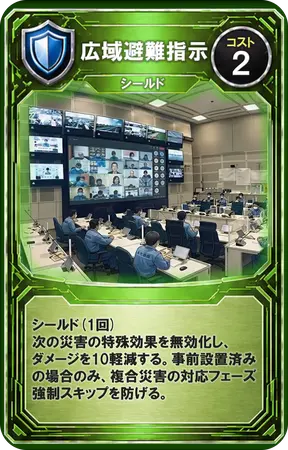
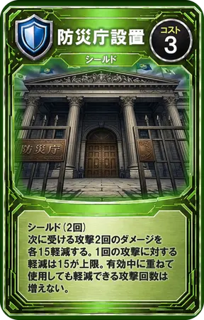
その場で使う。訓練・情報・連携が、緊急時の行動を変える。
黄 ＝ 注意・要対応
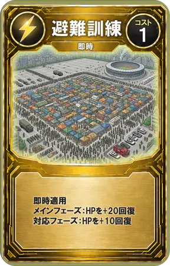
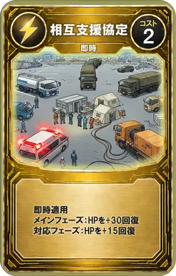
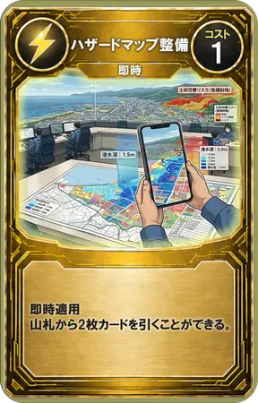
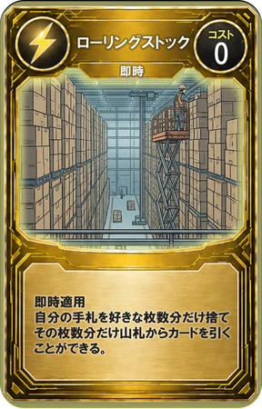